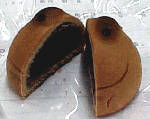
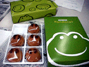

大王様に会うには、上の絵をクリック。ずずっと奥に写真館があるぞ。 |
|
【かえる古新聞】
|
|
【カエル速報】 1.カエルグッズ 2.カエルリンク 3.国家健全化計画 4.謎の髭男 5.とっくりくん 6.街頭で見た蛙 7.カエルショップ 8.奉納カエル絵馬 9.カエル・コスプレ |
| 大王様へのメール |
奉賛会推薦菓子
かえる饅頭 この欄に紹介するカエル物品や書籍についての情報を待っています。みんなで、掘り起こそう、かえる土産。かえる産品を奨励しよう！使うほど安く良くなるカエル品 |
|
|
食べ遅れるな！名古屋に急げ
|
 |
|
 |
ほんというと、これって、意外においしいので、出張のたびに購入しているんです(笑)、いつもは一人で食べていたのよね。
うまかったぞ
【げこげこ大王７世談】つぶらな瞳がついた、かえる饅頭は、ちょっと食べるのが切なくなるくらいに可愛いのだ。しかし、饅頭であるからには、食べてなんぼのもんである。同僚の女の子に包丁で切断してもらい、ああー饅頭よ。成仏してくれい。と念じながら食べたのだが、これは、意外に美味である。こけもも風味は、ほのかな香りを発していて、この種の、げてもの系菓子とは思えない完璧な饅頭であった。同僚全員で、ぱくぱく食べてしまい、食後もさわやかであった。これは断然おすすめである！！
印南町製『かえる饅頭』も確認
【ひろあき同志記者=緊急電】もう一方の『かえる饅頭』を追う、ひろあき同志記者は、和歌山県印南町に直撃取材を行い、ついに幻の印南町製『かえる饅頭』を、清酒『かえるの里』とともに入手することに成功した。次回は、ひろあき同志の独占手記を掲載するぞ。かえる友の会入会申込書入手
【げこげこ大王７世】全国かえる奉賛会は、かえる友の会の入会申込書を入手した。入会金１０００円、年会費２０００円だ。某美術館への入館料が２００円になるらしいが、関東くんだりまで、そんな特典を行使しに行くことができないぞ。しかし、入会すると『かえる通信』が定期購読できるらしい。元祖？かえる新聞を発見
【げこげこ大王７世】大王は、ページ更新しないときは、かたっぱしから検索エンジン回りをして、かえる検索をするのが趣味なのだが、昨日、こことは別の、かえる新聞を発見した。これは、素晴らしいので、さっそくカエルリンクに収録した。みんなも行ってみよう。現在、主筆としてお迎えしようとメールを出している。| 写真の説明＝包丁で切断するときは、涙がでるほど辛い。ゆるしてくれい。。。しかし、食べると、超美味なのである。青柳総本家よ、おいしいお菓子をありがと。ぼくは、いままでは、九州に銘菓『ひよこ饅頭』あり、と思っていたが、これからは、名古屋に『かえる饅頭』あり、と誇りにするぞ。 |